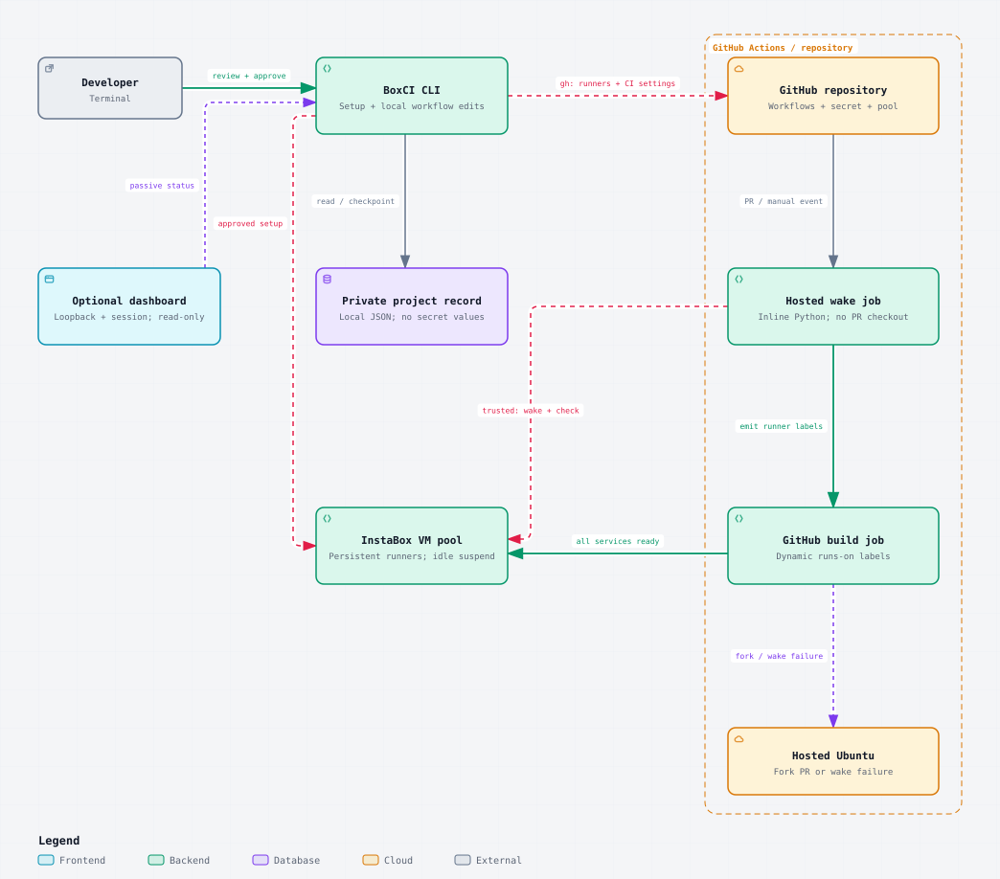

GitHub Actions runners on your own InstaBox VMs.
They wake up for CI and pause again when idle.
npm install -g @balasivagn/boxciWhat it is
Set up CI on InstaBox, migrate your existing CI, then run and monitor it, all in a couple of minutes with one CLI. Or simply point your coding agent at it.
BoxCI turns InstaBox VMs into dedicated GitHub Actions runners for your repository. One command plans the setup, a local workflow diff wires up CI, and your jobs run on machines you control.
Already have CI? boxci migrate moves your existing jobs
onto the pool, Blacksmith or ubuntu-latest alike, as a
local diff you review. It ships with an agent skill, so your coding
agent can do the migration with you.
Pick jobs that run on Linux x64 and whose steps work on both the InstaBox VM and the hosted Ubuntu fallback.
Get started
-
Install the CLI with
npm install -g @balasivagn/boxci, then runboxci --helpto list commands. -
Initialize from your app's checkout with
boxci init. It reuses your GitHub and InstaBox sign-ins, shows the plan for your approval, then sets up the runner. Workflow changes stay local. -
Migrate existing CI with
boxci migrate. Select the workflow jobs to move onto the pool, then review and approve the local diff.
cd /path/to/your-app
boxci init --dry-run
boxci init
boxci migrateThen review, commit, and push the workflow changes through your usual process. BoxCI creates no branch or PR.
Watch the pool any time with boxci dashboard: a local,
read-only view of your VMs, runners and recent jobs that never wakes a
VM.
Why BoxCI
-
Bring your existing CI.
boxci migrateretargets the jobs you already have (Blacksmithruns-onlabels, for example) as a local diff you review and commit. -
Agent-ready.
The bundled
boxci-migrateskill teaches your coding agent to driveboxci migrateinstead of hand-editing YAML. -
Reviewable.
boxci init --dry-runshows what setup will create. The real run leaves workflow files locally for your review. - Nothing extra to keep running. No keepalive, no webhook server, no BoxCI account. The wake step lives inside GitHub Actions.
-
A dashboard that watches without touching.
boxci dashboardis local, authenticated and read-only. It never wakes a VM. - Hosted fallback built in. Fork PRs, or a pool that is not fully ready, run on hosted Ubuntu instead. Fork code never receives your provider key.
How it works

- Wake. A hosted Ubuntu job reads the pool variable and CI secret. For a trusted event it wakes every pool VM at once and checks their runner services. This privileged step never checks out PR code.
-
Route. If the whole pool is ready, the build
targets your dedicated self-hosted label. Otherwise, and always
for fork PRs, it falls back to hosted
ubuntu-24.04. - Run. GitHub assigns the build to an idle runner with matching labels. Afterwards the VMs keep InstaBox's normal idle suspension.
Commands
| Command | What it does |
|---|---|
boxci --version |
Show the installed CLI version |
boxci init |
Set up runners, secret and pool variable; write only the wake helper |
boxci init --dry-run |
Preview setup without creating anything |
boxci migrate |
Move existing workflow jobs onto the pool |
boxci ci run |
Dispatch a connected application workflow; use
--workflow file.yml to select one
|
boxci status |
VM and runner states plus recent jobs (passive) |
boxci doctor |
Check account, quota, mapping, merge state, key expiry |
boxci dashboard |
Start or reopen the background, read-only dashboard |
boxci wake |
Explicitly wake the pool |
boxci pool add --count 1 |
Add a VM to the pool, within your quota |
boxci auth renew |
Rotate the 30-day CI credential |
Run boxci --help to see every command and flag in your
installed version.
Requirements
-
Node.js
^22.23.4 || >=24.22.1(22.23.4+ on 22.x, or 24.22.1+), npm, Git and access to GitHub. npm does not block installs on older Node; it only warns, and setup commands stop. - A GitHub.com repository where you have admin access, with Actions enabled.
- An InstaBox account with capacity for at least one additional VM, or an existing verified CI pool.
- Use a dedicated InstaBox account for CI if you can. The CI key can execute commands on every VM in its account.
Good to know
- BoxCI is an early release. The current published version is shown on the npm package page.
-
The CI credential expires every 30 days, with no automatic renewal
or reminder. Renew it with
boxci auth renew. - BoxCI makes no cost or speed promises. InstaBox usage, the hosted wake and fallback jobs, and other services follow their own billing.
- BoxCI is an independent open-source integration. It is not built or endorsed by InstaBox, and it is not affiliated with boxci.dev.
Docs
- README: quick start, commands, migration and caveats
- Configuration: sign-in, local project records, repository settings, pool discovery
- Operations: status, renewal, adding capacity, recovery, troubleshooting, cleanup
- Architecture: setup, CI and monitoring paths, with a source map
- Validation: what is tested today and what still needs verification
- Security: credential scope and isolation limits
Ideas and collaboration
BoxCI is young and shaped by people using it. Got an idea, a feature request, a rough edge, or want to build on it together? I'd like to hear it.
- Open an issue for feature requests and bugs.
- Message me on X or LinkedIn to talk ideas or collaboration.